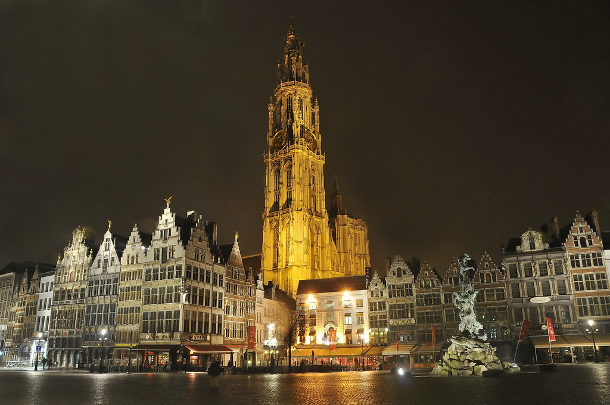
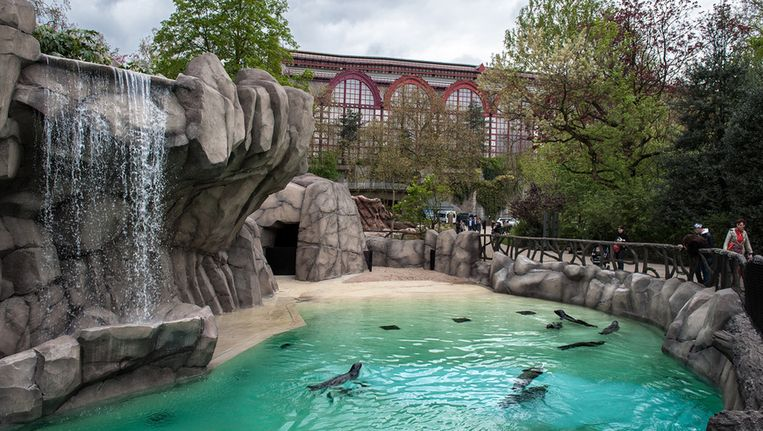

Vijf weetjes over Antwerpen
- Antwerpen is qua inwoners de grootste gemeente van België.
- Naar oppervlakte is het de 3e grootste gemeente van het land.
- Antwerpen heeft, na Rotterdam, de grootste haven van Europa.
- Antwerpenaars worden soms Sinjoren genoemd, naar het Spaanse woord señor.
- Antwerpen bestaat uit 9 districten.
Onze-Lieve-Vrouwekathedraal

De Onze-Lieve-Vrouwekathedraal is een gotische kruiskerk die gebouwd werd tussen 1352 en 1521.
Als eerste werd het koor gebouwd, dat in 1415 werd voltooid. Daarna werd de eerste geleding van het westelijke torenfront
gebouwd. Rond 1430 werd besloten om de kerk breder te maken dan het oorspronkelijke plan
en werd begonnen met de bouw van uiterste noordelijke en zuidelijke zijbeuken.
Op die manier zou uiteindelijk een zevenbeukige kerk ontstaan. Het schip van de romaanse Onze-Lieve-Vrouwekerk,
dat door de gotische kerk werd vervangen, bleef daardoor in gebruik en werd pas in 1469 afgebroken.
Kort daarop werd begonnen met de bouw van de middelste en binnenste zijbeuken en de middenbeuk.
Het schip werd in 1487 voltooid; aan het dwarsschip werd tot 1495 gewerkt.
In 1502 begon men aan de verdere afwerking van de noordelijke toren, waarvan het kruis in 1518 werd gewijd.
In 1534, na de brand van 1533, werd de houten vieringtoren geplaatst.
Pas in 1614 werd gestart met de bouw van de gewelven van de middenbeuk en de dwarsbeuken.
Bij de bouw van de kathedraal waren onder meer de bouwmeesters Jan en Pieter Appelmans en Rombout II Keldermans betrokken.
In 1521 werd begonnen met de vergroting van de kathedraal, die een groter koor en hoofdbeuk zou krijgen.
Om plaats te maken voor deze hoofdbeuk moest alles ten zuiden van de huidige hoofdbeuk afgebroken worden,
de huidige hoofdbeuk zelf zou dan als een zijbeuk fungeren. Men plande dus ook de Zuidertoren af te breken,
wat meteen verklaart waarom deze nooit werd afgewerkt. Verder dan de basis van het nieuwe koor is men nooit geraakt,
zoals te zien is op het stadsplan van Vergilius Bononiensis uit 1565.
In 1533 breekt er namelijk een grote brand uit in de kathedraal die veel schade aanrichtte.
De herstelling ervan trok veel mankracht en middelen naar zich toe waardoor de bouw moest worden gestaakt.
Door de opkomst van het protestantisme in de decennia daarna daalden de inkomsten van de Kerk drastisch,
waardoor de plannen voor de vergroting definitief opgeborgen werden.
Vandaag de dag kan men het grondplan van de geplande uitbreiding nog steeds aflezen in de vorm van het stratenplan
(Lijnwaadmarkt, Melkmarkt, Sint-Pieterstraat).
De Zoo van Antwerpen

ZOO Antwerpen is een dierentuin die behoort tot de KMDA. De dierentuin werd geopend op 21 juli 1843
en is daarmee de oudste dierentuin van België en een van de oudste dierentuinen ter wereld.
De zoo ligt vlak naast het station Antwerpen-Centraal op het Koningin Astridplein in Antwerpen.
In de volksmond wordt deze dierentuin ook wel 'de zoo' of 'de Zoölogie' genoemd. In 2014 vonden er 425 soorten onderdak in de zoo.
ZOO Antwerpen trekt gemiddeld één miljoen bezoekers per jaar, met een uitschieter van meer dan 1,3 miljoen in 2009.
In 2012 zakte het aantal bezoekers tot 838.000, waardoor Pairi Daiza de meest bezochte Belgische dierentuin werd.
Op 26 maart 1975 werd ZOO Antwerpen bij koninklijk besluit al erkend als een beschermd landschap,
op 14 januari 1984 werd de complete dierentuin erkend als historisch monument,
wat ook betekende dat er extra geld voorhanden kwam voor het onderhoud van de tuinen en gebouwen.
In 1997 openden de deuren van het zuidpoolbiotoop
Vriesland, dat vanaf dan drie pinguïnsoorten zou huisvesten. In 1999 volgde een forse uitbreiding van het olifantenperk
en de gehele zone rond de Egyptische tempel. Er waren vanaf dan olifanten, giraffen en Arabische oryxen terug te vinden.
Vanaf 1996 raakte de zoo echter weer in financiële problemen, gedeeltelijk te wijten aan de terugval van het aantal bezoekers
door de slechte bereikbaarheid van de zoo via het openbaar vervoer tijdens de grootschalige werken aan het Antwerpse Centraal Station.
In 2001 erkende de Vlaamse overheid echter dat de dierentuin niet enkel belangrijk is als toeristische attractie,
maar ook als centrum voor onderzoek en natuurbehoud. Een beheersovereenkomst werd gesloten en de zoo kreeg meer ondersteuning.
Ook met de provincie en stad Antwerpen werden op dat niveau afspraken gemaakt.
Dat alles resulteerde in 2003 in een compleet vernieuwd moerasbiotoop voor de nijlpaarden, kroeskoppelikanen, tapirs en moerasvogels.
Op 17 mei 2009 werd in ZOO Antwerpen, en voor het eerst in België, een olifant geboren.